FlashAttention论文解读¶
学习目标¶
- 理解FlashAttention的基本原理
1. 题目解读¶
本文的题目是"FlashAttention: Fast and Memory-Efficient Exact Attention with IO-Awareness"。这里有几个点：
- Fast
- 论文写道: “我们训练BERT-large（序列长度512）比MLPerf 1.1中的训练速度记录快15%，GPT2（序列长度1K）比HuggingFace和Megatron-LM的基准实现快3倍，而在long-range arena（序列长度1K-4K）比基准快2.4倍”
- Memory-efficient
- 普通的attention其内存访问量是O(N^2), 而FlashAttention是sub-quadratic/linear。
- Exact
- 这不是Attention机制的近似算法(比如那些稀疏或者低秩矩阵方法)——它的结果和原始的方法完全一样。
- IO aware
- 和原始的attention计算方法相比，FlashAttention会考虑硬件(GPU)特性而不是把它当做黑盒。
2.基本概念¶
让我们更详细地探讨一下关于IO感知的部分。"IO"（输入/输出）是导致更多的FLOPS不一定会导致更长运行时间的原因（也许有点反直觉，但如果你了解硬件工作原理，这是显而易见的）。论文中相关的论断是：
“Although these [approximate] methods reduce the compute requirements to linear or near-linear in sequence length, many of them do not display wall-clock speedup against standard attention and have not gained wide adoption. One main reason is that they focus on FLOP reduction (which may not correlate with wall-clock speed) and tend to ignore overheads from memory access (IO).”
为什么会这样呢？先看下图：
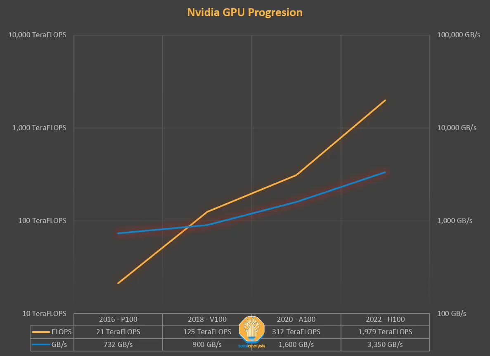
多年来，GPU的计算能力（FLOPS）的增长速度比增加内存吞吐量（TB/s）更快。
如果没有数据需要处理，那么额外的TFLOPS的计算能力是没有意义的。这两者需要紧密配合，但自从硬件失去了这种平衡，我们必须通过软件来进行补偿。因此需要算法能够感知IO(IO-aware)。根据计算和内存访问的比例，一个操作可以分为：
- 计算受限型(比如矩阵乘法)
- 内存受限型(比如activation, dropout, masking等element-wise操作和softmax, layer norm, sum等reduction操作。)
element-wise的操作在计算时只依赖当前值，比如把每个元素都乘以2。而reduction依赖所有的值(比如整个矩阵或者矩阵的行)，比如softmax。
而Attention的计算是内存受限的，因为它的大部分操作都是element-wise的。我们可以看一下论文中测试的实际Attention的运行情况：
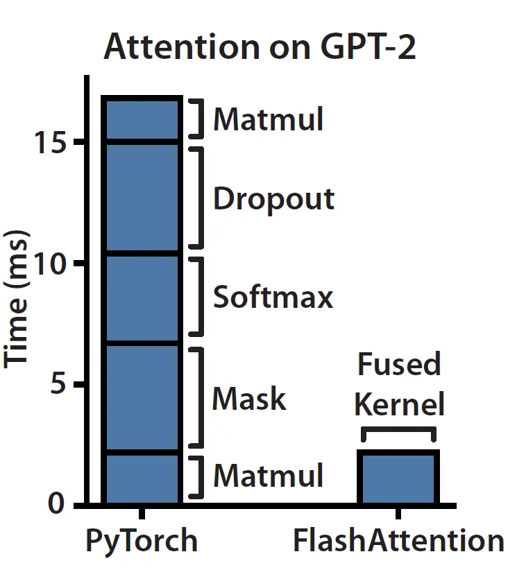
在左侧栏上看到，masking、softmax和dropout操作占用了大部分时间，尽管大部分FLOPS都用在矩阵乘法中，但它们的时间却花的不多。内存不是一个单一的构件，它在本质上是分层的，一般的规则是：内存速度越快，成本越高，容量越小。在计算机体系结构里，存储都是分层的：
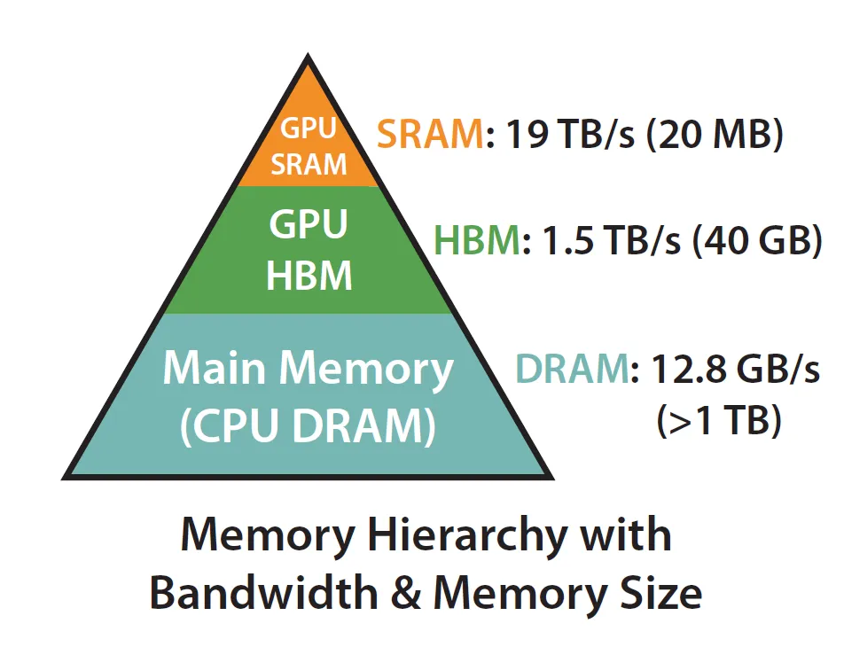
实际上，要实现"IO-aware"的关键在于充分利用静态随机存取存储器（SRAM）比高带宽内存（HBM）快得多的事实，确保减少两者之间的通信。("高带宽内存"(HBM)这个名字并不好！)
A100 GPU拥有40-80GB的高带宽内存（HBM，这是导致CUDA内存溢出的因素之一），带宽为1.5-2.0 TB/s，每个108个流式多处理器中有192KB的片上静态随机存取存储器（SRAM），估计带宽约为19TB/s。
下面我们来看看原始的Attention实现：
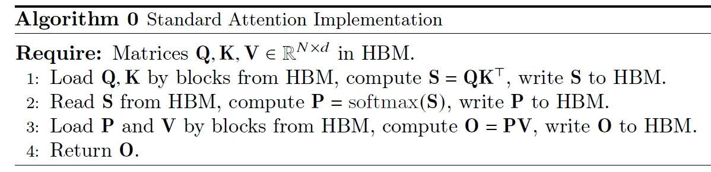
这里没有除以\sqrt{d}，不过要增加这一步对整体的计算复杂度没有太大影响。
可以看到，这个算法最大的问题就是每次操作都需要从HBM把数据加载的GPU的SRAM，运算结束后又从SRAM复制到HBM。这类似与CPU的寄存器和内存的关系。因此最容易相对的优化方法就是避免这种来回的数据移动。这就是那些编译器优化行家的黑话"kernel fusion"。
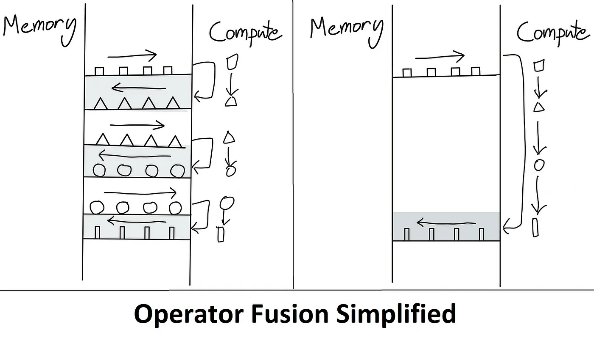
kernel在这里用人话来解释就是GPU的一次操作。而Fusion的意思就是把多个操作合并成一个。如上图所示，左边是没有优化的时候，共4次操作，每次操作都要在HBM和SRAM直接移动数据。而右边是kernel fusion后的优化版本，我们只需要在HBM和SRAM直接来回移动一次数据。
最后要介绍的一个术语是“materialization”。它指的是在上述标准的注意力实现中，我们分配了完整的NxN矩阵（S，P）。很快我们将看到，这正是FlashAttention需要解决的瓶颈，通过解决它将内存复杂度从O(N²)降低到O(N)。
FlashAttention基本上归结为两个主要思想：
- Tiling（在前向和后向传递中使用）- 简单讲就是将NxN的softmax/分数矩阵划分为块。
- 重新计算（仅在后向传递中使用 - 如果您熟悉activation/gradient checkpointing，这将很容易理解）。
3. Flash Attention的算法¶
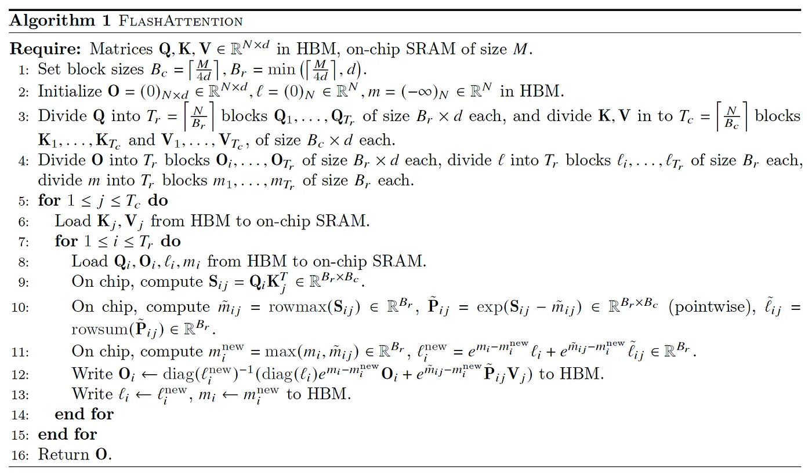
这个算法看起来很复杂，不要急，我们一点一点来分析它。
要实现Tiling最大的障碍就是softmax，因为它不是element-wise的操作，计算某个元素需要和它同一行的所有其它元素(假设是行softmax)。假设这一行的向量是z，那么softmax(z)的第i元素为：
看到它的分母没有？这就是麻烦的源头！为了计算第i个token对其它所有token的attention score，我们需要计算i和这一行所有的j(当然包括i自己)的score，然后再softmax。这里再次提醒一下，SRAM是非常有限的(回忆一下我们学习汇编语言是能用的寄存器数量)，我们无法把所有的数都加载的SRAM里。序列长度N(Token的数量)通常是以k来计算，4k和8k是比较常见的，某些应用(code)甚至希望能到64k和128k。因此N^2会增长的非常快。
所以这里的技巧就是把大的矩阵切分成较小的块，以便这些小块可以放到SRAM里。
3.1 softmax的分块Online计算¶
给定一个向量x=[x_1,...,x_B]，softmax(x)的计算过程如下：
注意：上面的式子中m(x)和l(x)是一个标量，而f(x)和softmax(x)是向量，最后一个式子是一个向量除以一个标量。
上面我们的最后一个下标是B，也就是计算一行中的B个，因此这是部分结果。另外这个部分结果和最终的结果是不同的，我们在后续的计算过程中会不断修正它。不熟悉的读者可能会奇怪为什么这个算法和前面的公式不同，为什么f(x)要减去m(x)？这是为了计算的数值稳定。对于一个向量来说，我们给每一个数减去相同的任一常量，其softmax是不变的。比如：
我们很容易验证上面两个式子是相等的(只需要把第二个式子的分子分母同时乘以e^{300})。但是第一种方法是不稳定的，因为e^{300}非常大，这就导致上溢。而第二种方法减去最大的数，这就保证最大的是e^0=1，而那些小的树都是零点几。我们知道在0~1之间，浮点数的精度是最大的。
现在问题来了：我们的x \in R^{2B}被切分成立两块(后面我们看到多块也是类似的，每次都是合并两块)变成x^{(1)} \in R^B和x^{(2)} \in R^B，假设我们可以分别用上面的4个式子计算它们各自的m(x^{(1)}/x^{(2)}),f(x^{(1)}/x^{(2)}),l(x^{(1)}/x^{(2)})，我们能不能用这些值计算出\text{softmax}(x)=\text{softmax}([x^{(1)},x^{(2)}])呢？如果可以的话，我们就可以把一个复杂的问题分解成很多简单的小问题然后逐渐合并小问题的解得到大问题的解。答案当然是可以的，这就是下面的计算公式：
这几个公式非常关键，是FlashAttention的核心。所以我们耐心一点，用一个简单的例子来演示一下上面的公式为什么正确。我们假设x \in R^6，并且它被切分成3个块x^{(1)}=[1,3],x^{(2)}=[2,4],x^{(3)}=[3,2]，我们先计算前两个块：
接下来我们根据上面的结果计算前两个块的结果：
为什么上面的结果是正确的呢？首先m(x)应该非常明显，4个数中的最大数肯定就是分成两组后的最大中的较大者。而f(x)计算的核心就是在f(x^{(1)})前乘以e^{3-4}以及在f(x^{(2)})前乘以e^{4-4}。l(x)的计算和f(x)是类似的。为什么需要在f(x^{(1)})前乘以e^{3-4}？因为在计算f(x^{(1)})时最大的数是3，因此前两个数的指数都乘以了e^{-3}。但是现在前4个数的最大是4了，后面两个数的指数乘以了e^{-4}，因此直接合并为[f(x^{(1)}), f(x^{(2)})]是不对的，需要把前面两个数再乘以e^{3-4}=e^{-1}。而后面两个数本来就乘以了e^{-4}，所以不用变。当然这里的例子是最大的数出现在后两个的情况。如果最大的数出现在前面，那么后两个数也需要乘以e^{m(x^{(2)})-m(x)}。所以通用的公式就是[e^{m(x^{(1)})-m(x)}f(x^{(1)}) , e^{m(x^{(2)})-m(x)}f(x^{(2)})]。
上面的内容是关键！请读者确保理解之后再往下看，如果没有理解，可以直接计算l([1,3,2,4]并对比分块的计算结果。
接下来，我们就可以把[x^{(1)}, x^{(2)}]看成新的x^{(1)}，而x^{(3)}看成新的x^{(2)}。注意：上面的公式没有要求x^{(1)}和x^{(2)}的元素个数相同。方法和前面是类似的，这里就不赘述了。
从上面简单的例子可以发现：我们可以把一个很大的x拆分成长度为B的块，用上面的算法先计算第1块和第2块，然后合并其结果；接着计算第3块，合并前3块结果；.... 另外如果我们定义空块x=[]时m(x)=-inf, f(x)=[] l(x)=0，那么第一个块也可以看成它和空的合并，这样的话我们的代码的循环空从第一个块开始。
3.2 代码分析¶
下面我们逐行来分析代码。
3.2.1 step 0¶
高带宽内存(HBM)的容量以GB为单位来计算(例如，RTX 3090拥有24GB的VRAM/HBM，A100拥有40-80GB等)，因此分配Q、K和V不是问题。
3.2.2 step 1¶
设置块的行大小B_r=\frac{M}{4d}，块的列大小为B_c=min(\frac{M}{4d}, d)。min函数的目的是防止块大小B_r \times B_c > M/4，这样就无法把4个这样的块放到VRAM里，后面我们会看到为什么是4个B_r \times B_c的块。
3.2.3 step 2¶
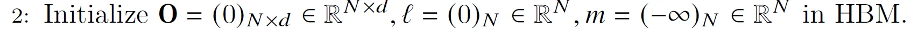
我们把结果矩阵O初始化为零，后面会逐步把中间结果累加进去，所以零是合适的初始值。类似的是l(注意：对于每一行来说，它是一个标量，用于累加指数和，由于输出有N行，所以这里的l是长度为N的向量)。m用于记录每一行当前最大的值，所以也是长度为N，而-inf是求max的合适初始值。
3.2.4 step 3¶
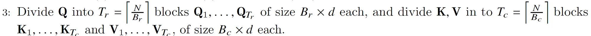
把Q \in R^{N \times d}切分成T_r=\left\lceil \frac{N}{B_r} \right\rceil个大小为B_r \times d的块，把K和V切分成T_c=\left\lceil \frac{N}{B_c} \right\rceil个大小为B_c \times d的块。因此每次计算QK^TV是B_r \times d的Q_i和d \times B_c的K_j^T和B_c \times d的V_j，这样得到的最终大小是(B_r \times d) \times (d \times B_c) \times (B_c \times d)=(B_r \times d)。
3.2.5 step 4¶
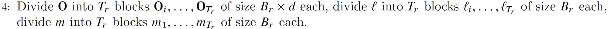
根据前面的计算，结果矩阵O需要切分成B_r \times d的块来存放中间结果。长度为N的l和m也要切分成B_r个元素的块，用于存放这些行当前的指数累加值和当前最大值。
3.2.6 算法图¶
在介绍step5前，请读者先看一下下面这个图：
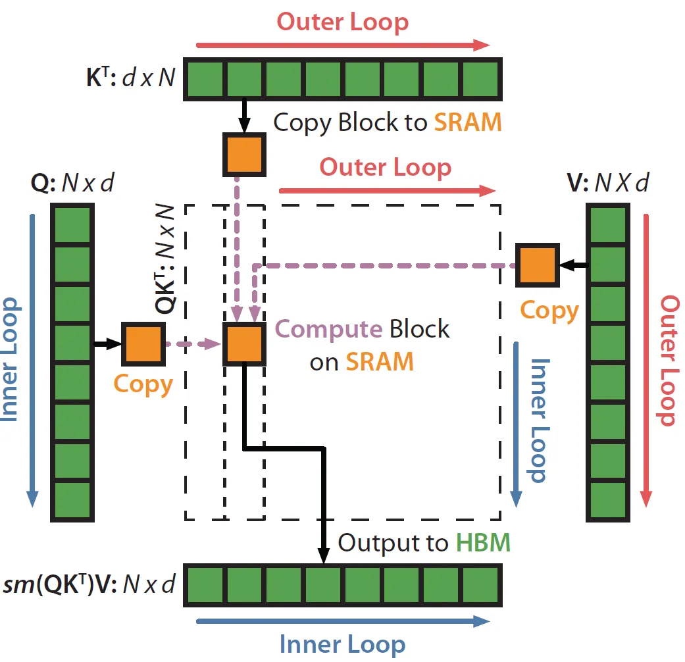
这个可以和后面的循环联系起来，大概的逻辑就是外层循环的下标j就是循环K^T和V，而内存循环的下标就是循环Q。我们前面举的例子可以认为只有一行。所以这个图的意思是，首先外层循环取出大小为d \times B_c的K_j^T和大小为B_c \times d的V_j，然后内层循环遍历整个Q，比如当前是i，也就是大小为B_r \times d的Q_i。我们就可以计算O=softmax(Q_iK_j^TV_j)。不过要记住，这是部分的计算结果，所以我们要保存(更新)中间统计量m和l，等到j+1的下一次循环时，内层循环还会再次遍历Q，那个时候会计算O=softmax(Q_iK_j^TV_j)，然后把这次的结果合并到最终的结果里。包括统计量也需要同步更新。这个是最复杂的部分，后面我们会详细讲解。
3.2.7 step 5¶
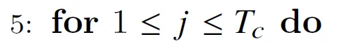
这是外层循环，j表示K和V的下标。
3.2.8 step 6¶
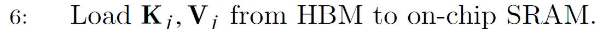
我们首先把K_j和V_j从HBM加载到SRAM。根据前面的讨论，这会占据SRAM 50%的存储。
3.2.9 step 7¶
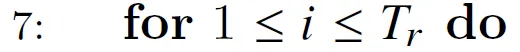
这是内层循环。
3.2.10 step 8¶
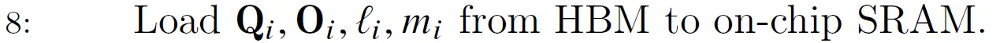
把Q_i(B_r \times d)和O_i(B_r \times d)加载进SRAM，同时把l_i(B_r)和m_i(B_r)也加载进去。Q_i和O_i会占据另一半的显存。而l_i和m_i比较小，可以放到寄存器里。
3.2.11 step 9¶
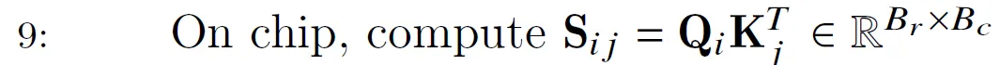
计算分块矩阵Q_i(B_r \times d)和K_j的转置(d \times B_c)的乘积，得到score S_{ij}(B_r \times B_c)。我们可以看到这里不需要计算N \times N的得分S矩阵，也就是不需要“materialized”。而只需要很小的S_{ij}。
我们来看一个简单的示例：这里假设外层循环下标j=3，内层循环下标i=2，N=25，块大小是5(这里假设下标从1开始)。那么计算如下图所示：
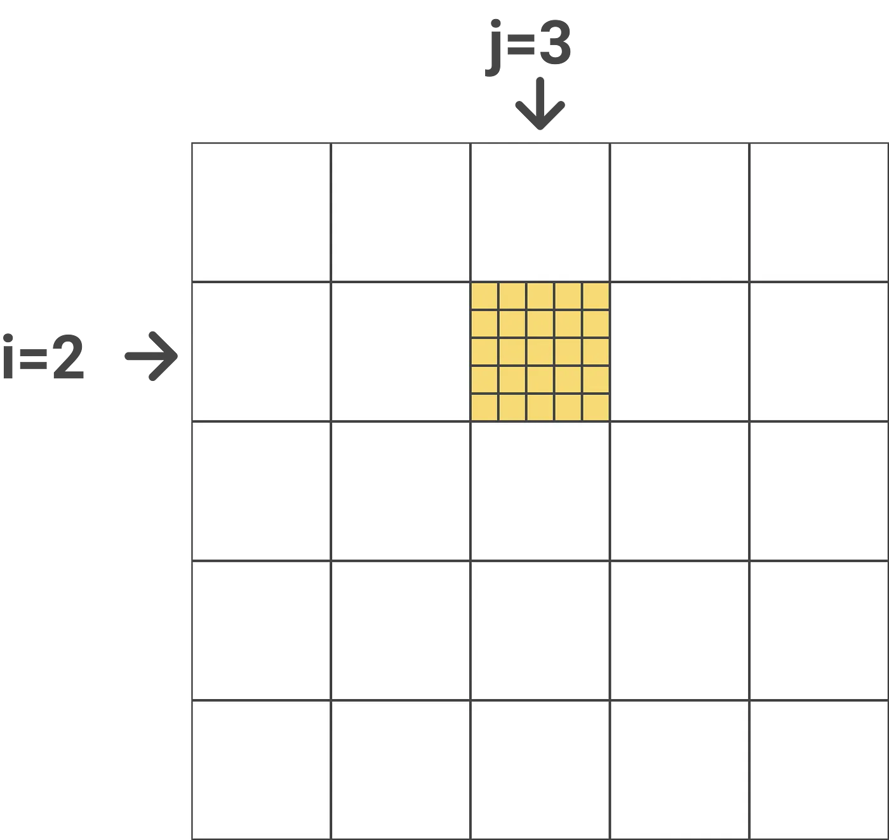
上图计算的是attention得分是Query为第6-10个token，Key是第11-15个token。
3.2.12 step 10¶
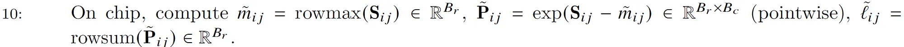
计算\tilde{m_{ij}},\tilde{l_{ij}}和\tilde{P_{ij}}，使用前面的公式就可以简单的得出。
\tilde{m_{ij}}是逐行计算的，找到每一行的最大值。
\tilde{P_{ij}}是逐点运算，把S_{ij}减去第i行的最大值\tilde{m_{ij}}(注意：这个下标j表示这是第j次计算，其实是一个值而不是向量)，然后在计算指数。
\tilde{l_{ij}}也是逐行计算，把每一行的\tilde{P_{ij}}加起来。
3.2.13 step 11¶
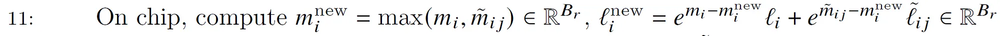
计算m^{new}_i和l^{new}_i。这也很简单。我们还是用前面的例子：
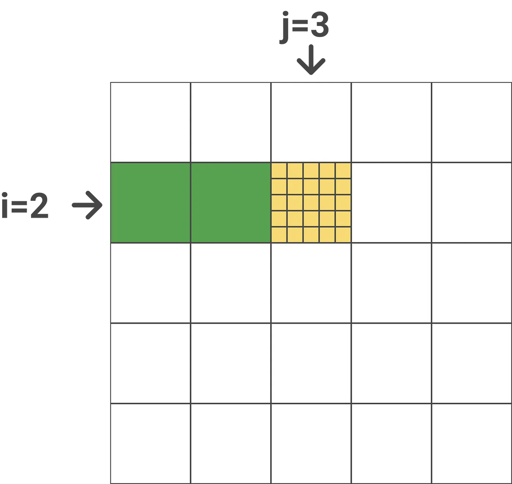
m_i包含了在当前块(j=3)之前所有块的最大值(按行)，比如上面的例子，m_i保存了j=1和j=2(图中的绿色块)块第6~10行的最大值。而\tilde{m_{ij}}是上一步得到的当前块(黄色)的最大值。因此取它们两者的最大值就得到前3个块(绿色加黄色块共15列)的最大值。l^{new}_i的计算也是类似的，只不过求和前需要用当前的e^{-m^{new}_i}修正，如果不了解的读者请参考前面的内容。
3.2.14 step 12¶
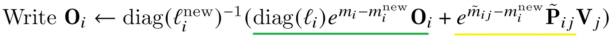
这是最复杂的一步。我们首先来看diag(l)，这里l是一个向量。用diag(l) \times N的作用就是用l的每一个元素乘以N的对应行。说起来有些抽象，我们来看一个例子：
为什么要搞出这么复杂的东西呢？目的就是把前面我们更新l的公式能写成矩阵乘法的形式，这样比较规整。其实在代码实现的时候还是一个值一个值来计算的。

第12步公式的绿色部分是更新当前块(j=3)之前的块(j<3)的softmax值，我们回忆一下前面的例子：在一开始(x^1=[x_1=1,x_2=3])，前两个数的softmax值是:
现在x^2=[x_3=2,x_4=4]加入，使得最大值变成了4，并且指数的和也增加了。所以第一步的需要重新计算。怎么重新计算呢？因为之前的PV没有保存，所以我们可以用l乘以O恢复出PV。论文中是矩阵的形式，也就是diag(l_i) \times O_i。恢复出来的R再乘以e^{m_i-m_i^{new}}就是修正后的PV，也就是e^{x_i-max(x)}v_j。
而公式的黄色部分是当前块(j=3)，e^{\tilde{m_{ij}}-m_i^{new}}是当前块的最大值减去j<=3所有块的最大值，这是对当前指数\tilde{P_{ij}}的修正。如果读者还记得\tilde{P_{ij}}=e^{S_{ij}-\tilde{m_{ij}}}(第十步)，那么可以发现其实就是e^{S_{ij}-m_i^{new}}。现在是不是很清楚了？
最后把新的PV除以新的l存到O里，只不过这里的除非也是用矩阵乘法来表示，也就是最前面的(diag(l_i^{new}))^{-1}。因为对角矩阵的逆就是它对角线元素的逆，也就是变成了除法。
3.2.15 step 13¶
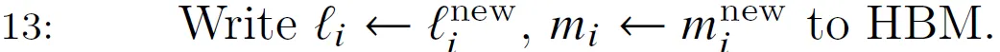
把最新的累计量l_r,m_r写回HBM，注意它们的大小都是B_r。
3.2.16 step 14-16¶
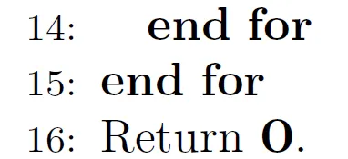
结束循环，返回结果。
4. 定理及其证明¶
4.1 Theorem 1¶
Flash Attention的算法能够在O(N^2d) FLOPs内正确的返回O = softmax(QK^T)V，除去输入和输出之外还需要O(N)大小的空间。
算法最主要的FLOPs用于矩阵乘法。在内层循环(算法第9行)，我们需要计算Q_iK_j^T \in R^{B_r \times B_c}。其中Q_i \in R^{B_r \times d}, K_j^T \in R^{d \times B_c}，这需要O(B_rB_cd)的FLOPs。内外循环相乘是T_cT_r=\left\lceil \frac{N}{B_c} \right\rceil \left\lceil \frac{N}{B_r} \right\rceil次，因此总的TLOPs为：
关于额外的空间，我们需要O(N)的空间来存储累计量(l,m)。
接下来我们用数学归纳法来证明算法的正确性，这里我们用外循环下标0 \le j \le T_c来进行归纳。
首先我们记K_{:j} \in R^{jB_c \times d}为K的前jB_c行，V_{:j} \in R^{jB_c \times d}为V的前jB_c行。
令S_{:,:j}=QK_{:j} \in R^{N \times jB_c}，P_{:,:j}=\text{softmax}(S_{:,:j}) \in R^{N \times jB_c}。
K_{:j}是K的前jB_c行，所以K_{:j}^T \in R^{d \times jB_c}K的前jB_c列，所以S_{:,:j}是矩阵Q乘以K的前jB_c列(行是N)。而P_{:,:j}是前jB_c列的softmax，这正是我们之前算法外层循环。
令m^{(j)},l^{(j)},O^{(j)}是算法在第j次外循环结束后HBM保存的累积量和\text{softmax}(QK^TV)(部分正确)的结果。注意：对于固定的i，这些量在每次外循环j结束后都会被更新到HBM中，下一次外循环时又加载回来。我们想证明：第j次外循环结束后，HBM中的值为：
根据算法的初始化(第1和2行)，j=0是显然是正确的，因为累积量m初始化为-inf，l初始化为0，O也是初始化为0。假设j时结论是正确的，那么我们希望证明j+1是上面三个式子也是正确的。
首先我们看累计量m，它的更新算法是： m^{(j+1)} = max(m^{(j)} , \tilde{m})，其中\tilde{m} \in R^N是块j的最大值(按行)，因此它等于max(S_{:,j:j+1})。根据归纳，而m^{(j)}=max(S_{:,:j})，所以：
这就证明了对于j+1，第一个等式是成立的。类似的，我们的更新l的算法是：
其中\tilde{l}= \text{rowsum}(exp(S_{:,j:j+1} − \tilde{m})) \in R^N 。因此：
而根据归纳：
代入上式得到：
所以在j+1时第二个式子而成立。
为了证明第三个式子，我们令 V_{j:j+1}为V的第jB_c列到(j+1)B_c-1列。证明过程如下图：
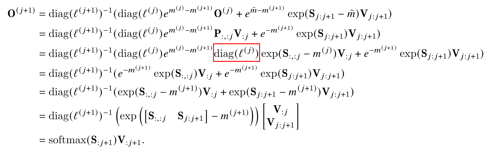
上面的式子中红色的部分是错误的，应该修改为(diag(l^{(j)}))^{-1}。这样它和左边的diag(l^{(j)})乘起来等于单位矩阵I，从而可以去掉。下面我们一步一步的来看这个证明过程。
1) 第一行 这就是算法的更新公式。在前面的step 12详细介绍过了。
2) 第二行 第一个是用归纳假设O^{(j)} = P_{:,:j}V_{:j}，第二个就是指数合并，e^{\tilde{m}}抵消掉。
3) 第三行 利用前面的定义：P_{:,:j}=\text{softmax}(S_{:,:j})，也就是说P_{:,:j}到块j时的S_{:,:j})的softmax。根据softmax和l及m的关系，我们有：
代入即可得到第三行。
4) 第四行 (diag(l^{(j)}))^{-1}和diag(l^{(j)})抵消，e^{m^{(j)}}和exp(-m^{(j)})抵消，就得到第四行。
5) 第五行 把e^{-m^{(j+1)}}合并到exp(...)里面就得到第五行。
6) 第六行 把 A \times B + C \times D写成[A, C] \times [B, D]^T的矩阵乘法(向量内积)
7) 第七行 就是softmax的定义。注意：我们需要把[S_{:,:j}, S_{:,j:j+1}]合并成[S_{:,:j+1}]。$\begin{bmatrix} V_{:j}\\ V_{j:j+1} \end{bmatrix}合并成[V_{:j+1}]$
所以对于j+1，我们希望证明的3个公式都是成立的，因此用数学归纳法可以证明对于j=0,...,T_c都是成立的。
当j=T_c时，根据第七行和S的定义，O^{(T_c)}= \text{softmax}(S_{:T_c}V_{:T_c})=\text{softmax}(QK^T)V
4.2 Theorem 2¶
假设序列长度为N，head的维度为d，SRAM的大小是M，并且我们假设d \le M \le Nd。标准的Attention算法需要O(Nd + N^2)的HBM 访问，而FlashAttention算法需要Θ(N^2d^2M^{−1})的HBM访问。
证明：我们首先分析标准Attention实现的IO情况。输入Q,K,V \in R^{N \times d}在HBM中，最终的输出O \in R^{N \times d}也要写回到HBM。
第一步是计算QK^T，这是(N \times d)矩阵乘以d \times N矩阵，输入Q和K需要读入，结果S \in R^{N \times N}需要写回HBM，因此HBM访问量是O(Nd + N^2)。
第二步是P = \text{softmax}(S)，输入和输出都是N^2，因此访问HBM为O(N^2)。
最后一般是O = PV，P和V需要读入SRAM，结果写回HBM，所以访问HBM为O(Nd + N^2)。
综上，标准Attention算法需要O(Nd + N^2)的HBM读写量。
接下来我们来看FlashAttention算法。
外层循环只遍历一次，因此K和V只从HBM加载到SRAM一次，Q和O需要遍历T_c次，每次都完整的把它们加载一遍。因此HBM的访问量是O(Nd+NdT_c)=O(NdT_c)。
下面来看B_c和B_r的约束条件。我们需要大小为B_c \times d块K_j,V_j能够放到SRAM里，因此：
类似的，大小为B_r \times d的块Q_i和O_i也需要能放进去，因此：
最后，我们需要S_{ij} \in R^{B_r \times B_c}也能放进去，因此：
因此，我们这样设置：
因此有：
所以有O(NdT_c)=O(N^2d^2M^{−1})。证毕。